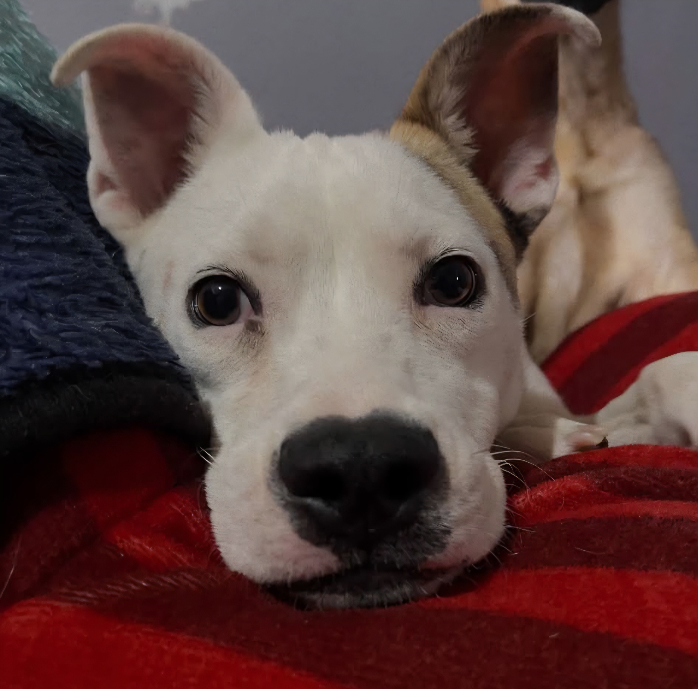
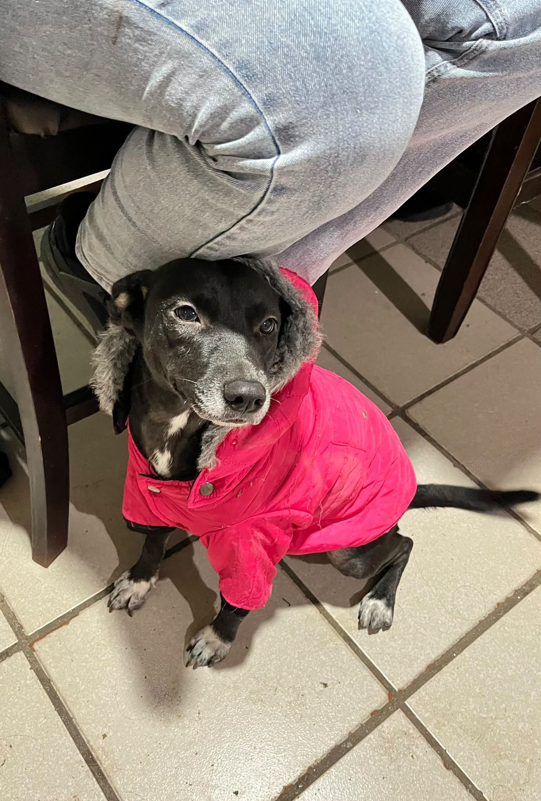

🔍 Mascota Perdida

Nombre: Desconocido
Raza: Desconocida
Última ubicación: Unidad Deportiva
Fecha: 17 de noviembre de 2026
Si tienes información sobre sus dueños, comunícate con nuestro club.
Ayúdanos a reportar o encontrar información de estos animalitos
Nombre: Desconocido
Raza: Desconocida
Última ubicación: Unidad Deportiva
Fecha: 17 de noviembre de 2026
Si tienes información sobre sus dueños, comunícate con nuestro club.

Nombre: Kámala
Raza: Desconocida
Última ubicación: Col. Chapultepec
Fecha: 17 de noviembre de 2026
Si tienes información sobre el paradero de la mascota, comunícate con nuestro club.

Nombre: Baby
Raza: Desconocida
Última ubicación: Col. 24 de Agosto
Fecha: Ultima semana
Si tienes información sobre el paradero de la mascota, comunícate a 8781118964. Se ofrece recompensa.

Nombre: Lulu
Raza: Desconocida
Última ubicación: Villas del Carmen
Fecha: 14 de Noviembre del 2026
Si tienes información sobre el paradero de la mascota, comunícate a 8781157687. (No llevaba el suéter rosa que se ve en la foto)

Nombre: Pirata
Raza: Desconocida
Descripcion: Perrita de tamaño medio. Blanca con manchas negras. Tiene una mancha negra en un ojo.
Última ubicación: Rumbo a la Macroplaza
Fecha: 14 de Noviembre del 2026
Si tienes información sobre el paradero de la mascota, comunícate a 8787001247.

Nombre: Sassy
Raza: Desconocida
Última ubicación: Col. ISSSTE
Fecha: 15 de Noviembre del 2026
Si tienes información sobre el paradero de la mascota, comunícate a 8781010058.